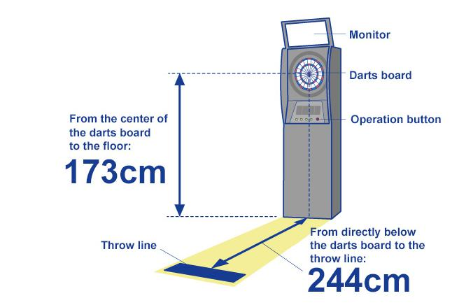
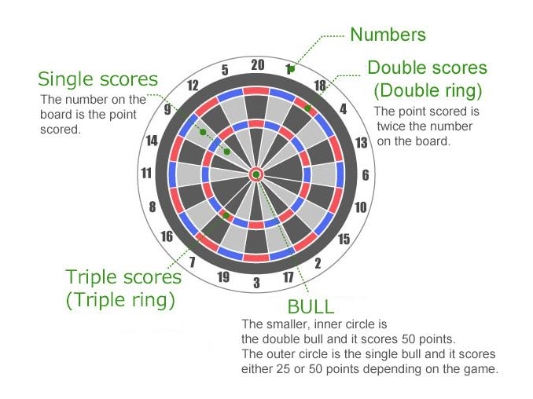

Where do you throw the darts from?
The play area for darts is determined based on the center of the board (bull).
The place where you throw from
It is called the throw line.
Distance
Distance from directly below the board to the throw line is 244 cm.
Height
The distance from the floor to the bull is 173 cm.
|
Learn how to score on the board! Dartboard About the dartboard Numbers Shows the points scored for each area. Single scores The number on the board is the point scored. Double scores(Double ring) The point scored is twice the number on the board. Triple scores(Triple ring) The thin ring inside the point area. Scores three times the number of points shown on the board. The highest score with a single throw is a triple at 20, which is 60 points. Bull The circle in the center of the board. The smaller inner circle is the double bull (50 points). The outer circle is the single bull (25 or 50 points depending on the game). No points No points will be scored in below cases: If the dart lands outside the double ring or outside the point area. The dart hits the previous dart and doesn’t stick on the board. If the dart gets stuck in the flight of the previous dart. The dart does not reach the dartboard. The dart bounces off the dartboard and drops onto the floor. However, if the board registers the points, then the score will be added. If the player steps over the throw line. At official matches, this will be checked strictly. |